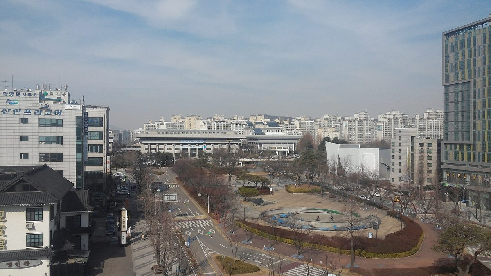
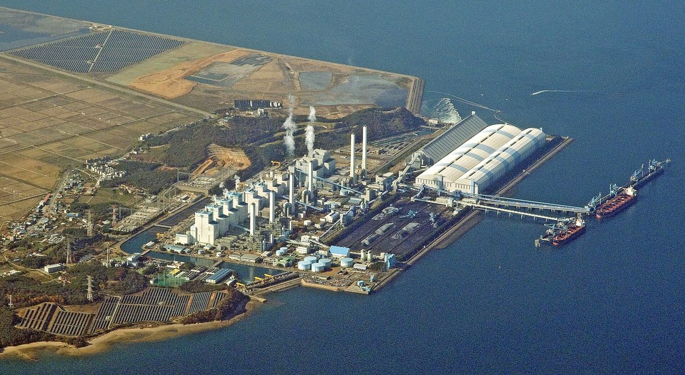
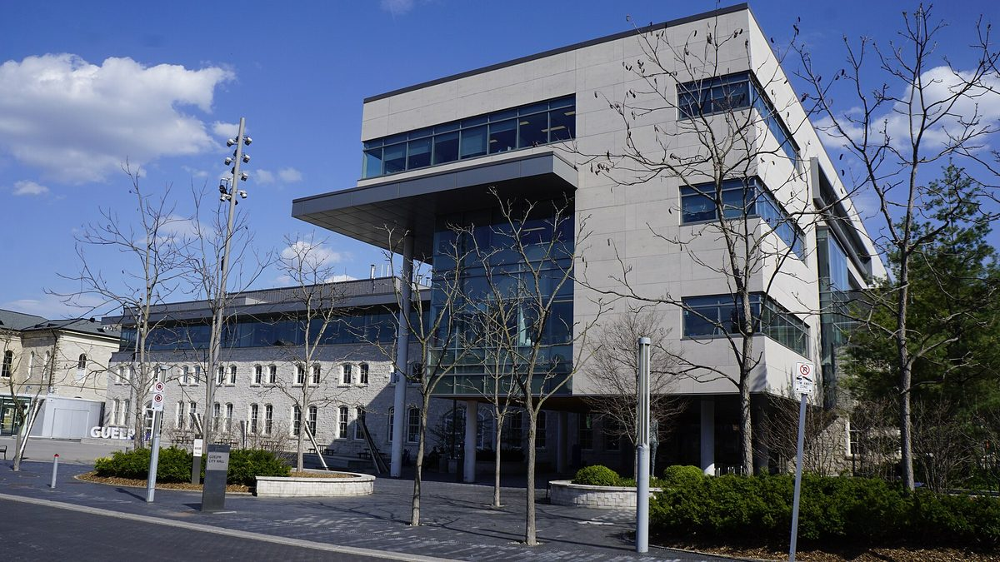
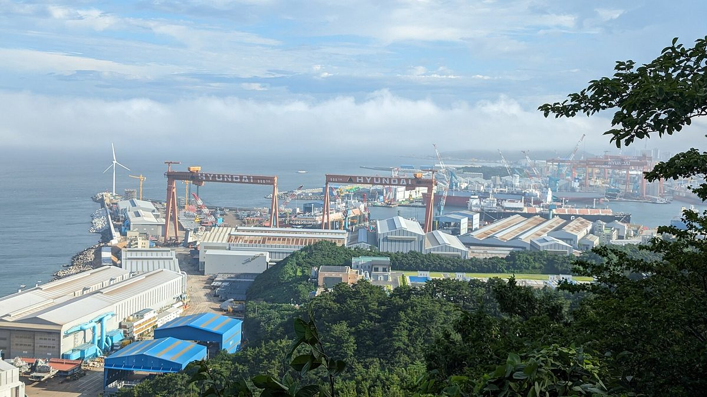

오피니언
김승남 광주도시공사 사장, 영농형 태양광 이익 공유 이끌 독립 에너지공사 설립 촉구…전남개발공사 안 재생에너지 수익 비중 1.2% 들어
기고에서 '전남광주에너지공사' 조속 출범 주장…발전지구 기획·글로벌 기업 직접 전력구매계약 맡을 공공 사령탑 필요, 초기 재정자립도로만 판단 말아야

"공영주차장 태양광, 시민은 펀드 투자자 아닌 사업 주체로"…장시정 염전골햇빛발전협동조합 이사장, 인천 40MW 공공 SPC에 협동조합 참여 요구
필자 "인천시 2027년 상반기 SPC 설립 계획…설계 단계부터 시민협동조합 넣어야", 수원 동부버스 공영차고지 협동조합 발전소 본보기로…시의회·시민발전협동조합네트워크 '지원 조례' 협의 중

제주 재생에너지 이익 '주민 환원 기준'부터 세워야…지역 기획, 신안 햇빛·바람연금 누적 300억 원 사례 들어 제주형 모델 설계 주문
국비 98억 원 분산에너지 실증, 전기차·주택 소유 여부 따라 참여 기회 달라…요금 절감과 개발이익 공유는 재원·원칙 달라, 사업비·운영비 뺀 배분 가능 이익 산정도 과제

최종웅 인코어드 대표, 나주 포럼서 분산형 전력체계 전환 제언…미국 CCA 들며 지역 전력 수익 주민과 나누자
발전공기업 통합본사 나주 유치 조건으로 지역 생산·소비 체계 꼽아…계통 지속 운전·블랙스타트·그리드포밍 기술과 충분한 ESS, 마이크로그리드 네트워크 필요하다는 기조강연

조순형 충남환경운동연합 에너지전환팀장, 당진에 상설 기후시민의회 조례 제정 제안
칼럼에서 2027년 제2차 탄소중립기본계획을 시민의회로 세우자고 주장…석탄화력 지역 정의로운전환위원회·'당진 기후변화 이야기' 학습자료 등 4가지 제안

허은녕 서울대 교수, 사업자 중심 태양광 보급은 한계…주택 자가소비·마을 자립으로 옮겨야
차기 한국신·재생에너지학회장, 가정용 직접 보급보조 부활과 기초지자체 에너지 자치권 확대 제안…RPS는 내년 계약시장으로 개편

조은희 대구지방환경청장, 재생에너지 혜택이 주민에게 돌아가는 질적 성장 필요…대구·경북 햇빛소득마을 72곳 주목
재생에너지의 날 앞둔 기고…대구·경북 태양광 발전량 전국 14.9%, 대구 시민햇빛발전소 24호기까지 준공, 투명한 수익 배분·주민 동의·생태 보전을 과제로 꼽아

캐나다 겔프시 전 지역에너지 담당 매니저, 시장의 지역난방 실패론에 독자 편지로 반박
시장이 든 손실 2,100만 달러·자본지출 6,000만 달러에 필자는 자산손상 약 1,200만 달러, 6,000만 달러는 확장 추정치라고 주장…2022년 도심 지역난방 시스템은 선지급 8달러에 민간 매각, 시장 측 반론은 실리지 않아

김병준 한국폴리텍대학 학과장, 멈춘 울산 해상풍력에 발전수익 공유·지역기금을 사업 설계 단계부터 넣자고 주장
기고에서 초기 투자비·금리·인허가·전력망·주민수용성이 얽힌 좌초 원인 짚어…지자체·발전사업자·지역기업·대학·주민이 함께하는 상설 추진기구 제안

"햇빛소득마을, 속도보다 이익 나누는 설계가 먼저"…강천구 인하대 초빙교수 기고
정보 공개·실질적 동의·계통 사전 확인·표준 이익공유 모델 제안, 시범마을로 검증한 뒤 단계적 확대 주장

시민발전 협동조합, 경쟁입찰 시장에서도 설 자리 있어야…오명실 포천시민햇빛발전협동조합 운영위원장 기고
창립 4년 만에 642kW·조합원 750명 경험 소개, 입찰 물량·상한가격·평가 기준이 소규모 사업 현실 못 담아…시민참여 보장 장치 요구

オピニオン
光州都市公社のキム・スンナム社長、営農型太陽光の利益共有を担う独立エネルギー公社の設立を訴え…全南開発公社内の再エネ収益比率は1.2%と指摘
寄稿で「全南光州エネルギー公社」の早期発足を主張…発電地区の企画やグローバル企業との直接電力購入契約を担う公的司令塔が必要、初期の財政自立度だけで判断すべきでないと
「公営駐車場の太陽光、市民はファンドの投資家ではなく事業の主体に」…チャン・シジョン塩田谷太陽光発電協同組合理事長、仁川40MWの公共SPCへの協同組合参加を求める
筆者「仁川市は2027年上半期にSPC設立の計画…設計段階から市民協同組合を入れるべき」、水原の東部バス公営車庫の協同組合発電所を手本に…市議会と市民発電協同組合ネットワークが「支援条例」を協議中
済州の再生可能エネルギー利益、まず「住民還元の基準」を…地元紙の企画、新安の「ひなた・風年金」累計300億ウォン超の事例を挙げ済州型モデルの設計を求める
国費98億ウォンの分散エネルギー実証、電気自動車や住宅の所有の有無で参加機会に差…料金の節約と開発利益の共有は財源も原則も異なり、事業費・運営費を差し引いた配分可能な利益の算定も課題
チェ・ジョンウン・エンコアード代表、羅州のフォーラムで分散型電力システムへの転換を提言…米国のCCAを例に地域電力の収益を住民と分かち合おうと訴え
発電公企業の統合本社を羅州に誘致する条件として地域で生産・消費する体制を挙げる…系統連続運転・ブラックスタート・グリッドフォーミング技術と十分なESS、マイクログリッドのネットワークが必要とする基調講演
チョ・スンヒョン忠南環境運動連合エネルギー転換チーム長、唐津に常設の気候市民議会を条例で設けるよう提案
コラムで2027年の第2次炭素中立基本計画を市民議会で策定すべきだと主張…石炭火力地域の公正な移行委員会、「唐津の気候変動ストーリー」学習資料など4項目を提案
ソウル大のホ・ウンニョン教授、事業者中心の太陽光普及は限界…住宅の自家消費と村の自立へ移行を
次期韓国新・再生エネルギー学会長、家庭向け直接普及補助の復活と基礎自治体のエネルギー自治権拡大を提案…RPSは来年から契約市場に再編
チョ・ウニ大邱地方環境庁長、再エネの恩恵が住民に戻る質的成長が必要…大邱・慶北の太陽光所得村72か所に注目
再生可能エネルギーの日を前に寄稿…大邱・慶北の太陽光発電量は全国の14.9%、大邱の市民太陽光発電所は24号機まで完成、透明な収益配分・住民同意・生態系保全を課題に
カナダ・ゲルフ市の元地域エネルギー担当マネジャー、市長の地域熱供給失敗論に読者投稿で反論
市長が挙げた損失2,100万ドル・設備投資6,000万ドルに対し、筆者は資産減損は約1,200万ドル、6,000万ドルは拡張の推計と主張…2022年に都心の地域熱供給システムは前払い8ドルで民間に売却、市長側の反論は掲載されず
韓国ポリテク大学のキム・ビョンジュン学科長、停滞する蔚山の洋上風力には発電収益の共有・地域基金を事業設計の段階から組み込むべきと主張
寄稿で初期投資・金利・許認可・送電網・住民の受容性が絡み合った頓挫の原因を指摘…自治体・発電事業者・地元企業・大学・住民が参加する常設推進機構を提案
「日差し所得村、速さより利益を分かち合う設計が先」…姜天求・仁荷大客員教授が寄稿
情報公開・実質的な同意・系統の事前確認・標準的な利益共有モデルを提案、モデル村で検証したうえで段階的な拡大を主張
市民発電協同組合にも競争入札市場で居場所を…オ・ミョンシル抱川市民太陽光発電協同組合運営委員長が寄稿
創立4年で642kW・組合員750人の経験を紹介、入札量・上限価格・評価基準が小規模事業の実情を反映していないとして市民参加を保障する仕組みを要求
评论
韩国光州都市公社社长Kim Seung-nam呼吁设立独立能源公社主导农光互补收益共享…指出全南开发公社内可再生能源收益占比仅1.2%
在投稿中主张尽快成立"全南光州能源公社"…需要负责规划发电园区、与跨国企业直接签订购电协议的公共指挥部，不应只以初期财政自给率来判断
“公营停车场光伏，市民应是项目主体而非基金投资者”…盐田谷阳光发电合作社理事长张时正要求仁川40MW公共SPC吸纳合作社参与
作者称“仁川市计划2027年上半年设立SPC…应从设计阶段纳入市民合作社”，以水原东部公交公营车场合作社电站为范例…市议会与市民发电合作社网络正协商“支援条例”
济州可再生能源收益应先确立"居民返还标准"…地方媒体策划报道以新安"阳光·风力年金"累计超300亿韩元为例，呼吁设计济州模式
98亿韩元国费分散能源示范项目，是否拥有电动汽车和住房导致参与机会不同…节省电费与共享开发收益的财源和原则不同，扣除项目费和运营费后的可分配收益如何计算也是课题
Encored代表Choi Jong-woong在罗州论坛上建议转向分布式电力体系…以美国CCA为例主张与居民分享地方电力收益
把就地生产、就地消费的体系列为发电公企业合并总部落户罗州的条件…主旨演讲称需要电网持续运行、黑启动、构网型技术以及充足的储能和微电网网络
忠南环境运动联合能源转型组长Jo Sun-hyeong提议唐津以条例设立常设气候市民议会
在专栏中主张由市民议会制定2027年第二期碳中和基本计划…提出在燃煤发电地区设立公正转型委员会、编写"唐津气候变化故事"学习资料等4项建议
首尔大学教授Heo Eun-nyeong：以开发商为中心的太阳能推广已到极限，应转向住宅自用和村庄自立
下任韩国新再生能源学会会长提议恢复家庭直接推广补贴、扩大基层地方政府能源自治权…RPS明年改为合同市场
大邱地方环境厅厅长Cho Eun-hee：需要让可再生能源惠及居民的质的增长…关注大邱和庆北72个阳光收入村
可再生能源日前撰文…大邱和庆北太阳能发电量占全国14.9%，大邱市民阳光发电站已建成至24号，将透明的收益分配、居民同意和生态保护列为课题
加拿大圭尔夫市前社区能源经理投书反驳市长的区域供热失败论
针对市长提出的亏损2,100万加元、资本支出6,000万加元，作者称资产减值约1,200万加元、6,000万加元只是扩建估算…2022年市中心区域供热系统以预付8加元出售给民企，未刊登市长方回应
韩国理工大学学科长Kim Byung-jun：停滞的蔚山海上风电应从项目设计阶段就纳入发电收益共享和地区基金
在投稿中指出初期投资、利率、审批、电网和居民接受度交织导致项目受挫…提议设立由地方政府、发电企业、本地企业、大学和居民共同参与的常设推进机构
市民发电合作社在竞争招标市场中也应有立足之地…抱川市民阳光发电合作社运营委员长Oh Myeong-sil撰文
介绍创立4年建成642kW电站、拥有750名社员的经验，认为招标规模、上限价格和评审标准未反映小规模项目现实，要求建立保障市民参与的制度
Opinion
Gwangju Urban Corporation CEO Kim Seung-nam calls for an independent energy corporation to lead profit-sharing from agrivoltaics, citing a 1.2% renewables revenue share at Jeonnam Development Corporation
In a contributed column he urges the swift launch of a "Jeonnam-Gwangju Energy Corporation" as a public control tower to plan generation zones and sign direct power purchase agreements with global companies, saying it should not be judged on early financial self-sufficiency alone
"Citizens should own public car park solar, not just buy into a fund": Jang Si-jeong of Yeomjeongol Solar Cooperative calls for co-ops in Incheon's 40MW public SPC
Writer says Incheon plans to set up an SPC in the first half of 2027 and co-ops must be in from the design stage, citing a cooperative plant at Suwon's Dongbu bus depot; city council and citizen power co-op network are discussing a support ordinance
Jeju should set rules for returning renewable energy profits to residents first, local series argues, citing Sinan's sunlight and wind pensions that have passed 30 billion won
A 9.8 billion won state-funded distributed energy pilot favours households with EVs and their own roofs; bill savings and profit sharing need separate funding and principles, and distributable profit after costs must be defined
Encored CEO Choi Jong-woong urges a shift to a decentralised power system at a Naju forum, citing US CCAs to argue that local power income should be shared with residents
He named local generation and consumption as a condition for bringing the merged headquarters of the power generation companies to Naju; the keynote called for ride-through, black start and grid-forming technology, ample ESS and networked microgrids
Chungnam environmental group's energy transition team leader Jo Sun-hyeong proposes an ordinance for a permanent climate citizens' assembly in Dangjin
In a column he argues the 2027 second carbon neutrality master plan should be drawn up through a citizens' assembly, and makes four proposals including a just transition committee for coal power areas and a "Dangjin climate change story" learning resource
Seoul National University's Heo Eun-nyeong says developer-led solar has hit its limit, urges shift to home self-consumption and village self-reliance
Incoming head of the Korean Society for New and Renewable Energy proposes reviving direct household subsidies and wider energy autonomy for local governments; RPS to become a contract market next year
Daegu environment chief Cho Eun-hee calls for renewables growth that returns benefits to residents, highlights 72 Sunlight Income Villages in Daegu and North Gyeongsang
Renewable Energy Day column notes the region produces 14.9% of Korea's solar power and Daegu has completed 24 citizen solar plants; names transparent revenue sharing, resident consent and ecological protection as tasks
Guelph's former community energy manager rebuts mayor's claim that district energy failed in letter to the editor
Against the mayor's figures of $21 million in losses and $60 million in capital spending, the writer argues impairments were about $12 million and $60 million was an expansion estimate; downtown system sold in 2022 for $8 upfront; no response from the mayor's side published
Korea Polytechnics department head Kim Byung-jun argues stalled Ulsan offshore wind needs revenue sharing and community funds built in from the design stage
In an op-ed he traces setbacks to tangled upfront costs, interest rates, permitting, grid shortages and local acceptance, and proposes a standing body of local government, developers, local firms, universities and residents
"Sunlight income villages need benefit-sharing design before speed," writes Inha University's Kang Cheon-gu
Op-ed proposes disclosure, meaningful consent, early grid checks and a standard benefit-sharing model, with phased expansion after pilot villages
Citizen solar cooperatives need a place in competitive auction markets, writes Pocheon cooperative leader Oh Myeong-sil
Column cites a cooperative that built 642 kW with 750 members in four years, says auction volumes, price caps and scoring ignore small projects, and calls for safeguards for citizen participation